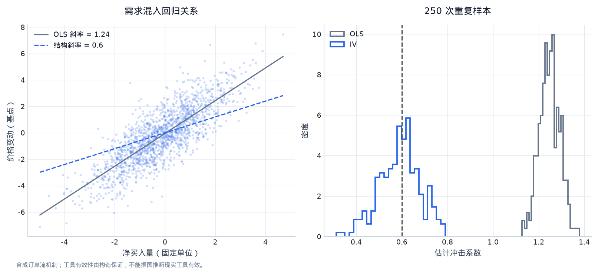
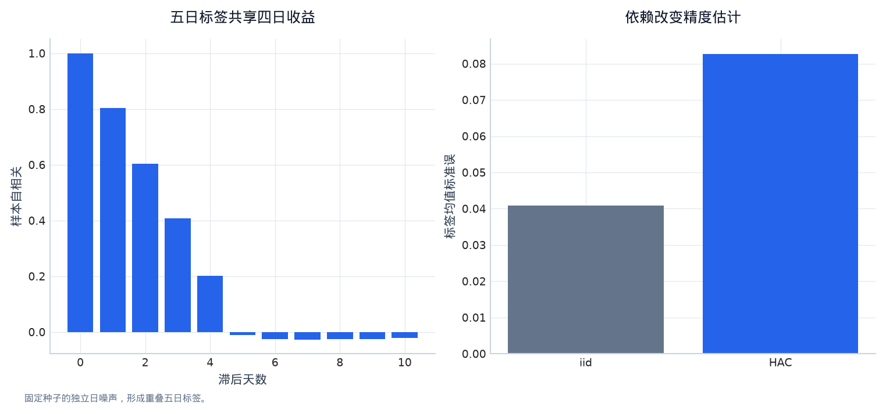
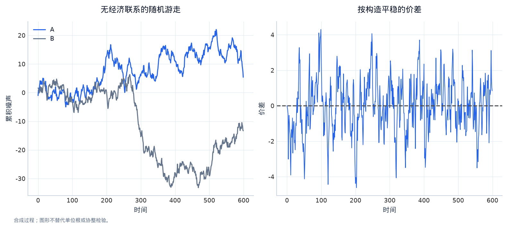
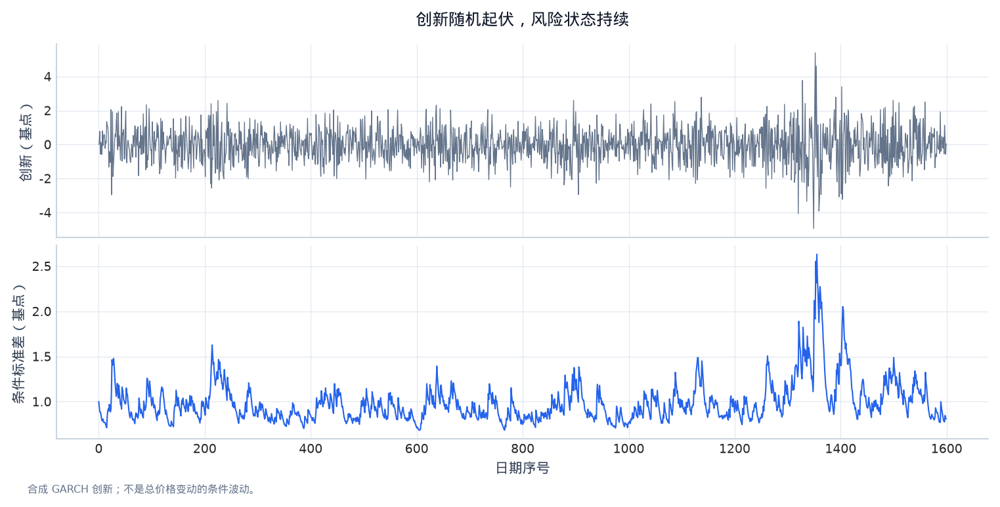
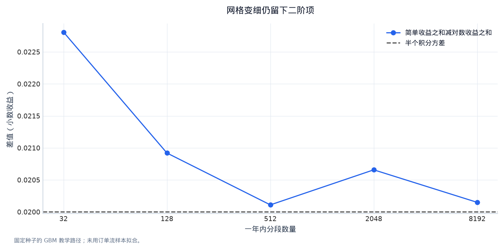

第三章：金融计量、时序建模与随机微积分¶
一只资产的买单增加时，价格往往也上涨。研究员看到散点图上向右上方的斜线，可能提出三个完全不同的问题：买单是否造成价格上涨？今天的买单能否预测明天收益？即使均值预测很弱，能否更好地估计明天的风险？三个问题可以使用同一张表，但目标、假设和证据不同。
本章用一份最小的订单流与价格数据，把这三个问题依次做完。默认你已熟悉条件期望、矩估计、极限定理、随机过程与基本统计推断；我们直接讨论金融研究中这些工具怎样使用、何时失效。实验使用固定随机种子的合成数据，生成机制公开，便于看清估计到底恢复了什么；它不提供真实市场中的工具变量或交易机会。
0. 学习目标与主线：同一张表，三个研究对象¶
读完本章，你应能区分回归系数的预测含义和因果含义，解释内生性为什么让普通最小二乘失效，完成两阶段最小二乘，并知道工具变量有效性不能只靠一个统计量证明。你还应能处理金融时序中的依赖、非平稳和条件波动，把离散收益模型接到伊藤公式的连续时间近似，最后将计量模型放进按时间推进的预测与交易实验。
先固定数据语义。每天收盘后，研究员看到当日净主动买入量 q、路由分配冲击 z 和当日中间价变动 r_bps。净主动买入量是主动买单减主动卖单；主动单指愿意跨越报价、立即与对手方成交的订单。q 用一个固定教学规模为单位，因此 q=1 表示一个单位的净买入，不是 100% 的仓位。中间价是最优买卖报价的平均，本章用它观察价格响应；它不等于可以成交的价格。
r_bps 的单位是基点，1 基点（basis point，bp）等于 0.01%，即小数收益的 0.0001。为使价格始终为正，代码把它定义为中间价的对数变动乘 10000。小变动时可近似普通收益；真正计算账户盈亏时再用 expm1 转成简单收益。因果回归使用同一天的 q 和 r_bps，预测回归使用今天的字段与下一天的收益；后者必须把标签向前对齐，不能拿同日解释力当作隔日预测力。最后的交易实验还会把次日总收益拆成隔夜和日内，只赚取次日开盘入场至收盘退出的日内收益。
还有一个研究员看不到的交易需求 u。它既让买单增加，也让价格变化，例如未被完整观测的消息。合成数据保留它只是为了核对估计偏差，实际特征矩阵不会使用它。z 在本例被设定为独立的路由分配冲击，它只通过订单流影响价格。现实中路由、做市商库存、客户类型都可能直接影响报价，因此不能把这个教学设定当成已经找到可用的现实工具。
import numpy as np
import pandas as pd
import matplotlib.pyplot as plt
rng = np.random.default_rng(3107)
n = 1600
u = np.zeros(n)
eps = np.zeros(n)
h = np.ones(n)
for t in range(1, n):
u[t] = 0.65 * u[t - 1] + rng.normal()
h[t] = 0.08 + 0.12 * eps[t - 1] ** 2 + 0.80 * h[t - 1]
eps[t] = np.sqrt(h[t]) * rng.normal()
z = rng.normal(size=n)
q = 0.8 * z + 0.8 * u + 0.4 * rng.normal(size=n)
r_bps = 0.6 * q + 0.9 * u + eps
sample = pd.DataFrame({"q": q, "z": z, "r_bps": r_bps},
index=pd.bdate_range("2018-01-02", periods=n))
sample["mid"] = 100 * np.exp(sample["r_bps"].cumsum() / 10000)
sample["next_r_bps"] = sample["r_bps"].shift(-1)
# 将一天的总变动拆成隔夜跳空与日内变动，供可执行的次日开盘策略使用。
gap_bps = 0.3 * r_bps + rng.normal(scale=0.4, size=n)
sample["intraday_bps"] = r_bps - gap_bps
sample["next_intraday_bps"] = sample["intraday_bps"].shift(-1)
print(sample.head().round(4).to_string())
1. 从回归方程走到内生性：一条斜线究竟代表什么¶
先估计当日价格响应：
这里 \(r_t\) 是当日以基点计的对数价格变动，\(a\) 是零订单流时的平均变动，\(\beta\) 表示每增加一个单位订单流对应多少基点的价格变化，\(e_t\) 收集方程没有描述的影响。普通最小二乘（ordinary least squares，OLS）选择使残差平方和最小的系数。你已熟悉其计算，本章关心它回答的问题：它先得到的是样本中最好的线性拟合，只有额外假设成立时才等于结构性价格冲击。
合成机制实际上是 \(r_t=0.6q_t+0.9u_t+\varepsilon_t\)。忽略 u 后，回归误差成为 \(e_t=0.9u_t+\varepsilon_t\)；订单流本身也含有 \(0.8u_t\)。因此 \(q_t\) 与误差相关，外生性条件 \(E[q_te_t]=0\) 不成立。这叫内生性（endogeneity）：右侧变量与被遗漏的价格驱动因素纠缠在一起。增加样本不会清除这种偏差，反而可能让错误结论的区间更窄。
带截距的一元回归在适当的大样本条件下满足：
\(\beta\) 是想识别的结构系数，分式是遗漏因素造成的偏差。本例两处 u 的系数均为正，所以 OLS 通常高于真实的 0.6。举一个不需要代码的数值：若 \(\operatorname{Cov}(q,e)=0.8\)、\(\operatorname{Var}(q)=2\)，偏差就是 0.4，估计趋近 1.0。这个系数在同一市场机制下可能仍有预测价值，但不能解读为外部增加一单位买单的因果效果。
同时发生的价格与买卖量还可能互相影响，这叫联立性（simultaneity）；带误差的订单分类则会造成测量误差。它们也是内生性来源，但处理方法不能只写成“多加几个控制变量”。控制变量若由买单之后的价格反应决定，还会切断想估计的路径。研究顺序应先写清谁在何时影响谁，再决定回归表中放什么。
def ols(y, x):
x = np.asarray(x, dtype=float)
if x.ndim == 1:
x = x[:, None]
design = np.column_stack([np.ones(len(x)), x])
beta = np.linalg.lstsq(design, np.asarray(y), rcond=None)[0]
return beta, design, np.asarray(y) - design @ beta
coef, design, residual = ols(sample["r_bps"], sample["q"])
print(pd.Series({"OLS slope": coef[1], "structural slope": 0.6}).round(4))
2. 工具变量：只使用订单流中能解释清楚的那一部分¶
工具变量（instrumental variable，IV）不是另一种复杂预测器。它的作用是找到订单流的一部分变化，使其不携带遗漏的 u。本例中的 z 要同时满足三个条件：它能改变 q，即相关性；它与未观测需求及其他价格冲击独立，即工具的外生性；它对价格的影响只能经过 q，即排除限制（exclusion restriction）。后两个条件来自研究设计和业务机制，不能因为第一阶段显著就宣布成立。
在有截距的一元情形，用工具与两边取协方差：
当排除限制与外生性使最后一项为零、分母又不为零时，比例识别 \(\beta\)。假设工具使订单流平均增加 0.8 单位，价格相应变化 0.48 基点，则冲击系数是 \(0.48/0.8=0.6\)。这不是用 z 代替 q 回归后直接读取系数；那样读到的是工具对价格的简约式影响 0.48。
多变量时通常写成两阶段最小二乘（two-stage least squares，2SLS）。第一阶段将 q 对 z 与所有外生控制变量回归，取拟合值 \(\widehat q\)；第二阶段用 \(\widehat q\) 解释 r。第一阶段丢掉 q 中不能由合法工具解释的部分，因此放弃一些拟合能力来换取识别。若研究有市场收益、时段等外生控制，它们应同时进入两阶段，不能只在第二阶段补上。
first, instrument_design, first_resid = ols(sample["q"], sample["z"])
q_hat = instrument_design @ first
iv_coef, fitted_design, _ = ols(sample["r_bps"], q_hat)
# 第二阶段的结构残差必须使用实际 q，不能使用第一阶段拟合 q。
iv_residual = sample["r_bps"].to_numpy() - design @ iv_coef
reduced, _, _ = ols(sample["r_bps"], sample["z"])
print(pd.Series({"first-stage slope": first[1],
"reduced-form slope": reduced[1],
"2SLS slope": iv_coef[1],
"ratio check": reduced[1] / first[1]}).round(4))

图 3-1｜OLS 拟合与工具变量识别。 左图中需求同时推动订单流和价格，OLS 斜率混入遗漏需求；右图比较重复生成样本后的 OLS 与 IV 系数，竖线为结构值 0.6。IV 的离散程度更大，识别依赖工具有效性。数据类型：固定随机种子的合成订单流与价格变动，非真实市场冲击估计。
第一阶段很弱时，\(\operatorname{Cov}(z,q)\) 接近零，样本误差会被比例的分母放大，这叫弱工具（weak instrument）。常见的第一阶段 F 统计量衡量排除工具的联合解释力；一条工具、独立同方差误差下，它等于第一阶段系数的 t 统计量平方。“F 大于 10”只是特定设定中的经验筛查，不适用于所有异方差、时序相关、多工具情形；弱识别稳健区间和对研究设计的审查仍然必要。
还可以故意破坏合成排除限制：把 0.5*z 直接加到价格方程。IV 此时识别的是 \(0.6+0.5/0.8=1.225\)，并不会因为工具很强而变正确。多于内生变量数量的工具称为过度识别；过度识别检验可以发现一组矩条件的矛盾，却不能证明所有工具有效，因为它们可能共同违反同一限制。工具数量恰好够用时，更没有这样的额外检验可做。
实际订单路由的研究必须解释分配规则、交易者是否能选择路由、路由是否改变延迟和报价，以及结果是否仅适用于受到该分配影响的订单。对于异质性因果效应，IV 常识别特定受影响群体的加权效应；不能自动推广为所有规模、时段与交易者的统一冲击。
first_se_iid = np.sqrt((first_resid @ first_resid) / (n - 2)
* np.linalg.inv(instrument_design.T @ instrument_design)[1, 1])
invalid, _, _ = ols(sample["r_bps"] + 0.5 * sample["z"], q_hat)
print(pd.Series({"first-stage F (iid diagnostic only)": (first[1] / first_se_iid) ** 2,
"IV with invalid exclusion": invalid[1]}).round(3))
3. 金融时序的误差：系数算对了，精度仍可能算错¶
现在回到同一份表的第二个问题：今天的订单流能否预测下一日价格变动？由于未观测需求 u 有持续性，今天的 q 含有明天需求的一点信息。拟合 \(r_{t+1}=a+bq_t+v_{t+1}\) 是预测方程，它的 \(b\) 与刚才同日冲击 \(\beta\) 是两个参数。即使同日结构系数被识别，隔日可交易性也要重新验证。
金融时序的误差常有异方差（heteroskedasticity），即不同时间的条件方差不同；也常有序列相关（serial correlation），即相邻误差并非独立。例如未观测需求持续多日，或用未来五日收益作为标签，每两个相邻标签共享四天收益。把这些观察当作独立样本，容易把估计精度夸大。
异方差与自相关稳健协方差（heteroskedasticity and autocorrelation consistent covariance，HAC）保留原有回归系数，重新估计它的方差。下面采用 Newey–West 的 Bartlett 权重：
\(X\) 是含截距的设计矩阵，\(x_t\) 是某一行的列向量，\(\widehat v_t\) 是残差，\(g_t\) 是该观察对回归矩条件的贡献；\(T\) 是样本数，\(L\) 是纳入的最大相关滞后。代码使用未除以样本数的求和形式，避免混淆归一化。HAC 估计的是残差与特征乘积的长期协方差；只把残差方差乘一个“有效样本数”通常不够。
重叠五日标签至少提示检查四阶相关，但“取四阶”并不能保证所有相关已被涵盖，需求状态可能持续更久。实际报告应给出若干合理带宽的敏感性。HAC 也不保证标准误一定更大；负相关时可能更小。它解决相关误差下的推断问题，不会修复遗漏变量、未来泄漏或样本选择。
def hac_cov(x, residual, lags=5):
x = np.asarray(x, dtype=float)
residual = np.asarray(residual, dtype=float)
scores = x * residual[:, None]
meat = scores.T @ scores
for lag in range(1, lags + 1):
cross = scores[lag:].T @ scores[:-lag]
meat += (1 - lag / (lags + 1)) * (cross + cross.T)
bread = np.linalg.inv(x.T @ x)
return bread @ meat @ bread
forecast_data = sample[["q", "next_r_bps"]].dropna()
b, x, v = ols(forecast_data["next_r_bps"], forecast_data["q"])
iid_se = np.sqrt(np.diag((v @ v) / (len(v) - 2) * np.linalg.inv(x.T @ x)))
hac_se = np.sqrt(np.diag(hac_cov(x, v, lags=10)))
# 2SLS 用结构残差和投影后的设计矩阵构造 sandwich；
# 把第二阶段当作普通回归直接读取其残差标准误会错。
iv_hac = np.sqrt(np.diag(hac_cov(fitted_design, iv_residual, lags=10)))
print(pd.DataFrame({"coefficient": [b[1], iv_coef[1]],
"HAC SE": [hac_se[1], iv_hac[1]]},
index=["next-day prediction", "same-day IV impact"]).round(4))
print("prediction iid SE:", round(iid_se[1], 4))

图 3-2｜标签重叠会制造依赖。 即使底层单日收益独立，五日累计标签也共享观察；左图的样本自相关来自同一组标签，右图比较均值的独立样本标准误和 HAC 标准误。数据类型：固定随机种子的合成独立收益及其滚动五日和；HAC 带宽为 8，不代表所有任务的最优选择。
如果研究对象是多资产面板，同一天的股票残差还会共享市场冲击。按日期聚类（cluster by date）允许同日资产任意相关；按资产聚类允许同一资产跨时间相关；双向聚类同时处理两种结构，但需要足够多的簇且满足相应大样本条件。不能因为有一百万行股票数据，就把它们当成一百万次独立市场实验。
以截面因子定价为例，每天将未来收益对当天可见的资产特征回归，得到每日的因子收益斜率，再对斜率的时间序列求平均，这就是 Fama–MacBeth 两步法的基本形式。这里“第二步”是跨日期平均，不是 IV 的第二阶段。其均值标准误仍要考虑斜率时序的依赖，且特征定价与可交易因子收益是相关但不同的问题。第四、五章会继续把日期、资产和持有区间接到研究设计里。
4. 平稳性、单位根与协整：不要让价格水平替你制造关系¶
同一只资产的中间价是每日收益累积而来。对它与另一条不相关但同样累积的价格水平做回归，可能得到很高的 \(R^2\) 和很小的朴素 p 值。原因是两条低频游走路径在有限样本中看起来共同上升或下降，误差结构却不满足通常的平稳回归条件，这叫伪回归（spurious regression）。
弱平稳（weak stationarity）要求均值不随时间变化、协方差只依赖滞后而非具体日期。实际金融收益也未必严格平稳，但它比价格水平更接近许多局部模型的起点。对一阶自回归 \(x_t=c+\phi x_{t-1}+\eta_t\)，\(x_t\) 是状态、\(c\) 是常数、\(\eta_t\) 是创新；\(|\phi|<1\) 时冲击逐渐消退，\(\phi=1\) 时是带漂移的单位根过程，冲击不自动消失。
增强 Dickey–Fuller 检验（augmented Dickey–Fuller，ADF）常写成：
\(\Delta x_t=x_t-x_{t-1}\)，\(\gamma=\phi-1\)；检验的零假设是 \(\gamma=0\)，即单位根。\(p\) 是控制短期相关的差分滞后数，\(\psi_j\) 是相应系数。这个检验的临界值不是普通回归的 t 临界值，是否放常数和趋势也会改变分布。本章不把它伪装成一个 t<-1.96 的函数。未拒绝单位根不等于证明一定存在单位根；样本短、结构变点或近单位根时，检验能力可能很弱。
协整（cointegration）处理另一种情形：两条各自非平稳的价格，其某个线性组合却平稳。例如 \(p^B_t=1.2p^A_t+s_t\)，其中两个 \(p\) 是对数价格、\(s_t\) 是平稳价差，则 \(p^B-1.2p^A\) 会围绕长期关系波动。两个价格高相关不保证价差平稳；估计出协整也不保证价差来得及在资金和交易约束内回归。
将其放回订单流主线：q 和短期收益有持续性，可以先建局部平稳模型；累计中间价水平不应直接与所有趋势变量回归。若做配对交易，先用训练期估计对冲比率，测试期固定或按既定规则更新，再将借券、交易成本和关系断裂纳入回测。误差修正模型（error correction model，ECM）可以让下一期变动依赖上一期偏离长期关系的程度，但它依赖稳定的长期关系，并非“总能等到回归”的保证。

图 3-3｜相关价格与稳定价差是两种证据。 左图展示无经济联系的两条累积噪声路径，右图展示按构造平稳的自回归价差；图形本身不能替代单位根或协整检验。数据类型：固定随机种子的合成路径，价差系数为 0.8，未计交易成本。
5. 从 AR 到条件波动：分别预测方向和风险¶
主线数据中，隔日收益的可预测部分来自持续的需求。最简单的自回归（autoregression，AR）用过去的自身数值预测当前数值，例如 \(r_{t+1}=a+\phi r_t+\nu_{t+1}\)。这里 \(a\) 是截距、\(\phi\) 是上一日收益的响应系数，\(\nu_{t+1}\) 是均值方程未解释的下一日创新。这里 \(a\) 是截距、\(\phi\) 是上一日收益的响应系数，\(\nu_{t+1}\) 是均值方程未解释的下一日创新。移动平均（moving average，MA）在时序模型中指过去创新的线性组合，和“20 日均线”不是同一个对象；ARMA 结合两者，ARIMA 再加入差分来处理某些非平稳过程。不要仅凭样本内拟合变好不断堆阶数；收益均值信号很弱，参数不稳定的代价可能超过拟合收益。
向量自回归（vector autoregression，VAR）同时使用收益、订单流等多个序列的滞后。若加入 q 的过去值后，样本外预测改善，且适当的联合滞后检验支持增量，通常称 q 对收益有 Granger 预测关系。这是相对于给定信息集与模型的预测关系，不排除共同驱动、遗漏变量或制度变化，不能代替第二节的因果识别。
再看风险。即使方向不可预测，大幅变动之后仍常出现大幅变动。条件异方差模型用 \(h_t=\operatorname{Var}(\varepsilon_t\mid\mathcal F_{t-1})\) 描述给定过去信息的创新方差，\(\mathcal F_{t-1}\) 代表当时已知信息。GARCH(1,1) 的常见形式是：
\(\xi_t\) 是单位条件方差的创新，\(\omega>0\) 提供基准方差，\(\alpha\ge0\) 控制昨日冲击的影响，\(\delta\ge0\) 控制旧方差的持续性。若 \(\alpha+\delta<1\) 且相应矩条件成立，无条件方差为 \(\omega/(1-\alpha-\delta)\)。本章生成器取 \(0.08,0.12,0.80\)，因此创新的长期方差为 1，\(\alpha+\delta=0.92\) 表示冲击会缓慢消退；这不是价格总收益的方差，因为总收益还包含订单流和需求。
研究者看不到真正的 eps，只能先估计均值模型得到残差，再拟合方差模型。若均值残留了需求状态，估计的风险会混合“均值没解释完”和“创新方差变化”。我们还可以用指数加权移动方差（exponentially weighted moving average，EWMA）作最低风险基线：\(\widehat h_{t+1}=\lambda\widehat h_t+(1-\lambda)\widehat\varepsilon_t^2\)。\(\lambda\) 越接近 1，反应越慢但曲线越平滑；它相当于无常数且参数和为 1 的递推，因此不能拿上述 GARCH 的长期方差公式直接套用。

图 3-4｜风险预测追踪的是波动状态。 生成机制的条件标准差随历史冲击变化，单日创新会在其周围随机起伏；看到明日风险较高不等于知道明日收益为负。数据类型：固定随机种子的 GARCH 合成创新，与主线数据使用相同参数。
# 冻结前 900 天拟合的均值模型，按已实现残差顺序更新风险。
ar_coef, _, ar_resid = ols(sample["r_bps"].iloc[1:900], sample["r_bps"].shift(1).iloc[1:900])
variance_state = float(ar_resid.var(ddof=1))
risk_rows = []
for t in range(900, len(sample)):
risk_rows.append({"date": sample.index[t], "forecast_sd_bps": np.sqrt(variance_state)})
realized_error = sample["r_bps"].iloc[t] - (ar_coef[0] + ar_coef[1] * sample["r_bps"].iloc[t - 1])
variance_state = 0.94 * variance_state + 0.06 * realized_error ** 2
print(pd.DataFrame(risk_rows).head().round({"forecast_sd_bps": 4}).to_string(index=False))
6. 随机微积分：为什么对数增长少了半个方差¶
现在把同一资产中间价在短时间内的变化写成一个局部连续模型。几何布朗运动（geometric Brownian motion，GBM）假设：
\(S_t>0\) 是中间价，\(t\) 按年计，\(\mu\) 是瞬时算术漂移率，\(\sigma\) 是年化瞬时波动率，\(W_t\) 是标准布朗运动。\(dt\) 是很短的时间长度，\(dW_t\) 的量级是 \(\sqrt{dt}\)。这只是将离散实验中的局部均值和风险写成连续时间语言；原数据含有需求状态和变化的波动，并不严格服从常系数 GBM。短时间的价格跳跃和盘口离散性也会使扩散模型失效。
普通链式法则遗漏了布朗运动的二次变差。伊藤公式（Itô's formula）给出：
\(f_t\) 是函数对时间的偏导，\(f_S,f_{SS}\) 是对价格的一、二阶偏导。多出来的二阶项来自 \((dW_t)^2\) 在求和极限下贡献 \(dt\)，不能像平滑路径中的高阶小量一样扔掉。取 \(f(S)=\log S\)，则 \(f_S=1/S\)、\(f_{SS}=-1/S^2\)，得到：
若年化算术漂移是 8%、波动率是 20%，预期对数增长约为 \(8\%-0.5\times20\%^2=6\%\)。第二章的波动拖累在这里得到连续时间解释。它不是说“每条路径都会少赚 2%”：\(E[S_T]\)、\(E[\log S_T]\) 与单条已实现路径是不同对象。
下面保持同一价格过程的研究含义，但用单独标明参数的局部扩散近似检查这个二阶项。每一层使用相同布朗路径的细分或合并，比较 \(\sum\Delta S/S\) 与 \(\log(S_T/S_0)\) 的差。当网格变细时，这个差趋近 \(\tfrac12\sigma^2T\)。这不是从合成订单流估计出的无套利定价模型，只是为理解价格变换提供一个可计算的局部模型。
mu, sigma, years = 0.08, 0.20, 1.0
steps = 8192
brownian_rng = np.random.default_rng(97)
fine_dw = np.sqrt(years / steps) * brownian_rng.normal(size=steps)
rows = []
for intervals in [32, 128, 512, 2048, 8192]:
dw = fine_dw.reshape(intervals, steps // intervals).sum(axis=1)
dt = years / intervals
log_increment = (mu - 0.5 * sigma ** 2) * dt + sigma * dw
simple_increment = np.expm1(log_increment)
rows.append({"intervals": intervals,
"sum simple minus log": simple_increment.sum() - log_increment.sum(),
"half integrated variance": 0.5 * sigma ** 2 * years})
print(pd.DataFrame(rows).round(5).to_string(index=False))

图 3-5｜二阶项在细网格下仍然留下来。 横轴为一年内的分段数量，曲线表示同一路径上简单收益之和减对数收益之和；参考线是半个积分方差。数据类型：固定随机种子的常系数几何布朗运动教学路径，年化波动率为 20%，未拟合真实价格。
鞅（martingale）是相对于某个信息集与概率测度，未来条件期望等于当前值的过程。在真实概率测度 \(P\) 下，有风险溢价的折现股价通常不必是鞅；无套利定价在适当条件下引入风险中性测度 \(Q\)，使可交易资产的折现含分红收益过程具有鞅性质。\(Q\) 是给衍生品定价的一种概率权重，不是现实中收益方向的预测概率。
因此，若要用本章订单流预测下单，应估计真实信息条件下的收益与成本；若要给期权定价，则还需要无套利关系、风险中性动态和对冲假设。不能把风险中性漂移 \(r_f\) 当成股票真实预期收益，也不能把今天的预测收益机械塞进 Black–Scholes 当作定价漂移。\(r_f\) 在此代表无风险利率。我们只在这里建立两种任务的边界，不把一章扩张成完整衍生品定价课程。
7. 走到金融机器学习：同一个预测问题，按时间检验增量¶
回到最初的每日表。因果识别已经说明如何估计同日冲击，但交易实验需要收盘可见的 q、当天收益与当日风险去预测下一日收益。对特征向量 \(x_t\)，平方损失的最优目标是条件均值 \(E[r_{t+1}\mid x_t]\)；线性回归和岭回归只是对这个函数不同约束的估计。岭回归（ridge regression）对系数平方加惩罚，以牺牲一些样本内拟合换取在共线和噪声中的稳定性，截距不惩罚。
本节按原始时间轴固定前 900 天为训练段、接着 300 天为验证段、最后剩余部分为测试段；预热窗口与边界清理会减少实际有效行数。训练集拟合标准化参数和均值模型，验证集只选择预先给出的两个惩罚值，测试集最后报告一次。训练集最后一行若标签要到验证期才实现，就删除；验证集最后一行若标签跨入测试期也删除。标签“存放在今天这一行”不代表今天已经可见。这里每个标签只跨一天，若换成五日收益则边界需要相应多删，并处理重叠依赖。
风险特征始终使用截至当天收盘的 20 日收益标准差，所有区间保持相同定义。它是总日收益的波动代理，而标签是下一日日内收益；这里只把它当作一个当时可见的风险状态，不声称两者具有完全相同的条件方差。第七章会进一步讨论面板、重叠标签、非线性模型、概率校准与漂移，本章先把计量模型接到一个能检查每一步的预测实验。
feature_cols = ["q", "r_bps", "risk_bps"]
sample["risk_bps"] = sample["r_bps"].rolling(20, min_periods=20).std()
model_data = sample[feature_cols + ["next_intraday_bps"]].dropna()
train_end, validation_end = sample.index[900], sample.index[1200]
train = model_data.loc[model_data.index < sample.index[899]].copy()
validation = model_data.loc[(model_data.index >= train_end)
& (model_data.index < sample.index[1199])].copy()
test = model_data.loc[model_data.index >= validation_end].copy()
center = train[feature_cols].mean()
scale = train[feature_cols].std(ddof=0).replace(0, 1)
def feature_matrix(frame, columns, center, scale):
return np.column_stack([np.ones(len(frame)), (frame[columns] - center) / scale])
def fit_ridge(x, y, penalty):
regularizer = np.diag([0] + [penalty] * (x.shape[1] - 1))
return np.linalg.solve(x.T @ x + regularizer, x.T @ y)
train_x = feature_matrix(train, feature_cols, center, scale)
validation_x = feature_matrix(validation, feature_cols, center, scale)
test_x = feature_matrix(test, feature_cols, center, scale)
train_y = train["next_intraday_bps"].to_numpy()
validation_mse = {}
models = {}
for penalty in [1.0, 100.0]:
models[penalty] = fit_ridge(train_x, train_y, penalty)
validation_mse[penalty] = np.mean((validation["next_intraday_bps"].to_numpy()
- validation_x @ models[penalty]) ** 2)
chosen = min(validation_mse, key=validation_mse.get)
prediction = test_x @ models[chosen]
print("Validation MSE:", validation_mse, "Chosen penalty:", chosen)
前面的 HAC 预测回归考察次日收盘对今日收盘的总收益，这里正式交易目标改成次日开盘到收盘的日内收益。隔夜部分在看到收盘信息之后、次日开盘之前发生，不能假设仍可赚取。代码生成器将同一总收益拆成隔夜与日内，这一拆分是教学设定；真实研究应直接使用开盘、收盘报价和时间戳。
交易规则保持透明：今天收盘形成分数，明天开盘按预测除以当前风险得到权重，截断到 -1 至 1，明天收盘全部平仓。因每天收盘归零，双边交易量是两倍的权重绝对值，不能用相邻两日权重之差代替。假设开、收盘均能在对应中间价附近完成小单，再用固定单边基点成本吸收价差和手续费；大额冲击、借券和融资仍需另建模型。这些假设不妨碍检验预测链条，但限制了对真实可交易性的结论。
position = pd.Series(np.clip(prediction / test["risk_bps"].to_numpy(), -1, 1), index=test.index)
turnover = 2 * position.abs() # 每天开仓和收盘平仓；不跨夜持有。
next_simple_return = np.expm1(test["next_intraday_bps"] / 10000)
gross = position * next_simple_return
cost_one_way_bps = 2.0
net = gross - turnover * cost_one_way_bps / 10000
mean_baseline = train_y.mean()
result = pd.Series({
"chosen penalty": chosen,
"baseline test MSE": ((test["next_intraday_bps"] - mean_baseline) ** 2).mean(),
"ridge test MSE": np.mean((test["next_intraday_bps"] - prediction) ** 2),
"gross mean (bp/day)": gross.mean() * 10000,
"net mean (bp/day)": net.mean() * 10000,
"mean traded fraction": turnover.mean(),
"net mean HAC SE (bp/day)": np.sqrt(hac_cov(np.ones((len(net), 1)),
net - net.mean(), 10)[0, 0]) * 10000,
})
print(result.round(4).to_string())
这里的仓位规则并非最优组合。价格响应方程的“每单位订单流影响多少基点”，和交易成本中“每单位账户交易量收费多少基点”，分母不同，不能混用。仓位随预测改变、风险估计带有误差、进入与退出都要成交，都会改变净结果。
若均方误差（mean squared error，MSE）下降、成本后收益仍为负，研究结论应是“预测有局部改善，当前交易规则没有经济增量”。评估风险模型可另用 QLIKE：\(\log\widehat h_t+\widehat\varepsilon_t^2/\widehat h_t\)，其中 \(\widehat h_t>0\) 是当时预测的方差，\(\widehat\varepsilon_t^2\) 是均值模型残差平方的噪声代理；它在常见条件下适合比较方差预测，但不能把单日平方收益当作无噪声真方差。收益预测、风险预测和交易绩效应各用相应目标比较。
8. 多重尝试与不确定性：模型之外还有研究者¶
本章只在验证集比较两个惩罚值。如果研究者还尝试了 50 个窗口、20 套标签、多个成本和资产子集，最后只报告最好的测试 t 值，单个模型的 HAC 标准误并没有覆盖这次筛选。多重检验（multiple testing）是研究过程的属性，复杂模型不是唯一来源。

图 3-6｜筛选本身会放大显著结果。 20 个独立零收益策略中最大的绝对 t 统计量，比任意预先指定的单一策略更容易超过 2；这只是筛选的示范，不是金融策略统一显著性阈值。数据类型：固定随机种子的 4000 次合成模拟，每条策略含 252 个独立观察。
对于预先列明的一组检验，可以使用控制家族错误率或错误发现率的方法；但若实验尝试没有完整记录，事后对最后十个结果做校正也无法还原全部选择。回测过拟合的有效防线还包括：提前固定主规格、用验证集选择、保留一次最终测试，以及在新的前向区间确认。
移动块自助法（moving-block bootstrap）按连续时间块重抽样，保留块内依赖，可用于净收益均值或模型差异的不确定性；如果跨资产共同冲击重要，应把整个日期截面一起抽走。块长短会改变结果，结构变点仍会破坏平稳重抽样的解释。若想评估“整套选模过程”的表现，每次重抽样应重新执行训练和选择，而不是只给已经选好的最佳收益序列套区间。
现在三个问题终于能放在一起判断：IV 估计支持合成世界中的同日冲击系数约为 0.6；时间验证告诉我们可见的订单流是否帮助预测次日收益；成本和可执行时间决定这种改善能否形成策略。任何一个环节成立，都不能替其他环节作答。
9. 常见误解：把主线反过来检查¶
“用了 HAC，所以回归已经可靠”忽略了它只改变推断的精度，不改变有偏的系数；本例遗漏 u 的 OLS 依然会偏高。“工具很强，所以没有内生性”混淆了第一阶段相关性和排除限制，直接通道 0.5*z 已给出反例。
“价格高度相关，所以适合配对”忽略了价差是否稳定以及是否能承受关系断裂；“Granger 因果就是经济因果”则把给定信息集的预测改善升级成干预结论。“GARCH 能预测危机”也说得过头，它主要描述条件方差，不保证预测突然跳跃或危机方向。
最后，“标签已 shift，所以回测没有未来信息”还漏掉训练边界、预处理和成交时点。本章末日标签被删除、边界标签被清理、标准化只用训练样本，并在次日开盘进场；中间价附近成交和固定小额成本依然需要接受报价与流动性的检查。研究可信度来自把这些具体环节一一说明。
10. 手工练习：用同一张订单流表做研究判断¶
练习 A：算出遗漏因素和非法工具的代价¶
真实结构系数为 0.6，\(\operatorname{Var}(q)=2\)、\(\operatorname{Cov}(q,e)=0.8\)。另有工具 \(z\)，\(\operatorname{Cov}(z,q)=0.8\)。先求 OLS 的概率极限；若工具还直接影响价格 0.5 基点/工具单位，且 \(\operatorname{Var}(z)=1\)，IV 的概率极限是多少？
参考答案
OLS 趋近 \(0.6+0.8/2=1.0\)。直接通道使 \(\operatorname{Cov}(z,e)=0.5\)，IV 趋近 \(0.6+0.5/0.8=1.225\)。工具与订单流关系很强仍可能得到偏得更厉害的结果；比较 OLS 与 IV 谁更接近某个想要的数字，不能证明工具有效。
练习 B：清理标签边界¶
你在第 100 日收盘训练模型，准备从第 101 日起验证。每行标签是未来五日收盘累计收益。哪些训练行的标签在训练时已经完整可见？若交易决定在收盘前 10 分钟作出，还能使用当天最终订单流吗？
参考答案
第 95 日的标签涵盖第 96–100 日，收盘后已知；第 96–100 日的标签尚未完整实现，应从本次训练中删除。第 101 日起的验证样本按各自时点构建。收盘前 10 分钟不能使用当天最终订单流，必须截断为当时累计量，并用相同口径重建历史特征。多做一次 shift 不能补救字段本身的可见时间错误。
练习 C：风险与交易价值¶
EWMA 旧方差为 4 平方基点，当日已知残差为 3 基点，\(\lambda=0.94\)。明日方差和标准差是多少？预测收益为 0.2 基点，仓位从 0 改成 0.1，单边成本 2 基点/单位交易，单期预期净贡献是多少（只计这次进入成本，不计后续退出）？
参考答案
方差为 \(0.94\times4+0.06\times9=4.3\) 平方基点，标准差约 2.074 基点。毛贡献为 \(0.1\times0.2=0.02\) 基点，成本为 \(0.1\times2=0.2\) 基点，净贡献为 -0.18 基点。风险可预测、收益有正均值，都不保证交易成本后划算。
练习 D：伊藤修正与定价测度¶
年化算术漂移为 10%、年化波动为 30%，常系数 GBM 下的一年预期对数增长是多少？若无风险利率为 3%，能否用风险中性定价中的 3% 替换它来预测真实账户增长？
参考答案
预期对数增长为 \(10\%-0.5\times30\%^2=5.5\%\)。风险中性测度下的定价漂移不等于真实测度下的预期收益，不能据此预测账户增长。5.5% 本身也只是模型内的期望，不是单条路径的保证收益。
11. 自测与思考¶
- 为什么本章的 IV 同日回归和岭回归隔日预测不应比较谁的 \(R^2\) 更大来决定优劣？
- 下一日标签没有重叠，是否就可以完全忽略时序依赖？
- 如何比较加入
q后的预测增量，而避免把成交假设改善混入模型增量？ - 若真实数据上第一阶段 F 很大，最需要补充哪类证据？
参考答案
第一问的目标不同：IV 识别结构响应，预测模型估计条件均值；拟合高低不能替代识别或样本外损失。第二问不能，持续的需求、波动状态和仓位规则都可能使误差或策略收益相关。第三问应固定时间切分、标签、预处理、仓位映射和成交成本，只比较加入 q 前后的预测与净收益差，再单独做延迟和执行压力。第四问是工具的业务机制、分配是否接近外生、是否存在直接价格通道、样本选择与适用群体，而不是再寻找一个更大的第一阶段统计量。
12. 本章小结¶
同一份订单流数据把金融计量的核心边界连在一起：拟合关系需要外生性才能解释为结构冲击，工具变量用可解释的外部变化识别该冲击，HAC 与聚类处理误差依赖下的精度；价格水平、长期价差与收益不能不加区分地进入回归。均值模型和波动模型预测不同对象，伊藤公式解释了价格变换中为什么留下二阶项，也提醒我们区分真实预测与风险中性定价。
研究最终仍要走回一条可执行时间线：今天真正可见的信息，经过只在过去拟合的模型，形成未来的预测与仓位，再与相同条件下的基线比较。下一章把这里的日期边界和字段语义变成数据管线，第七章在相同原则下展开金融机器学习。